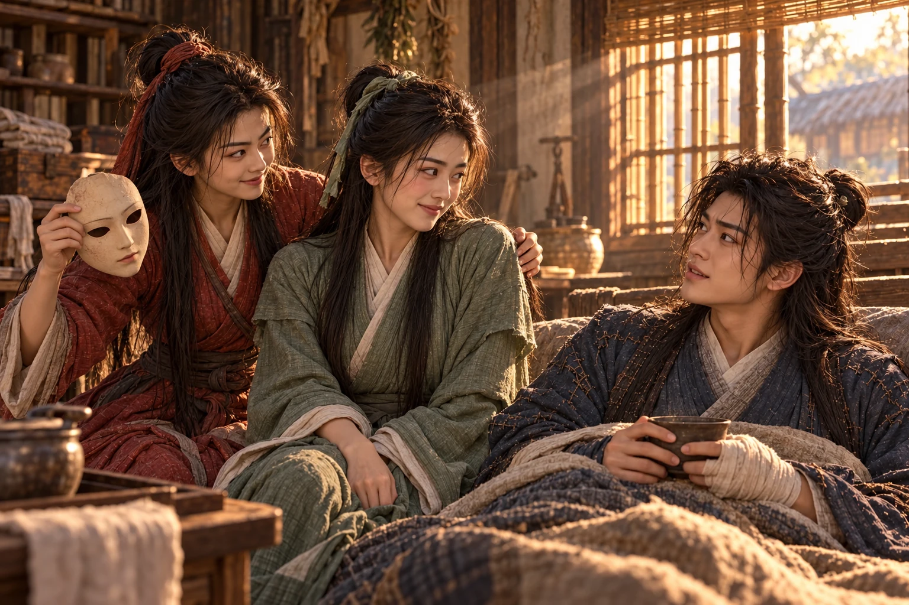
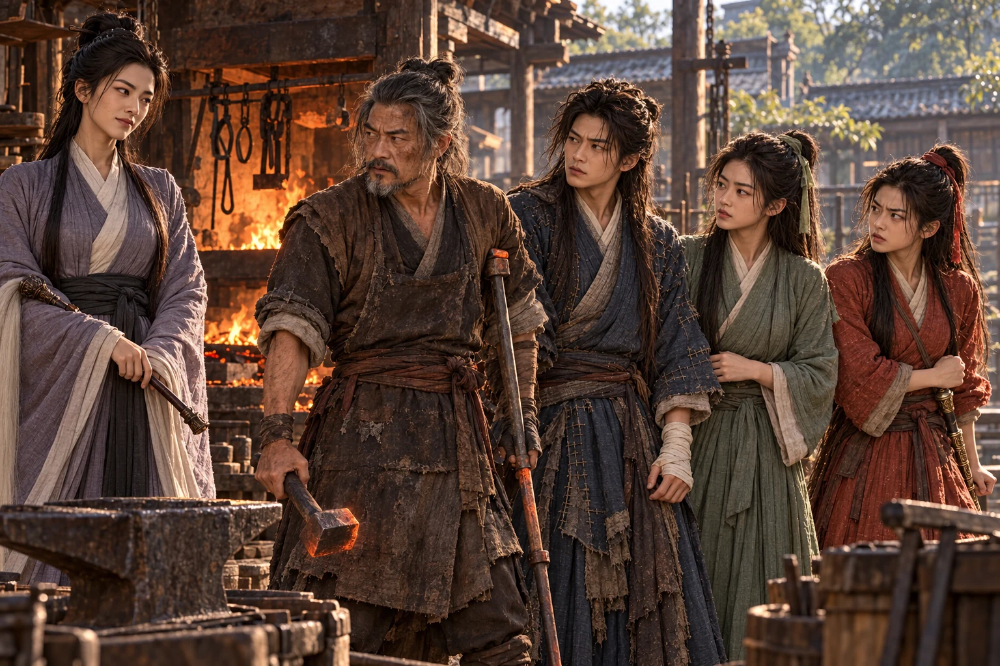
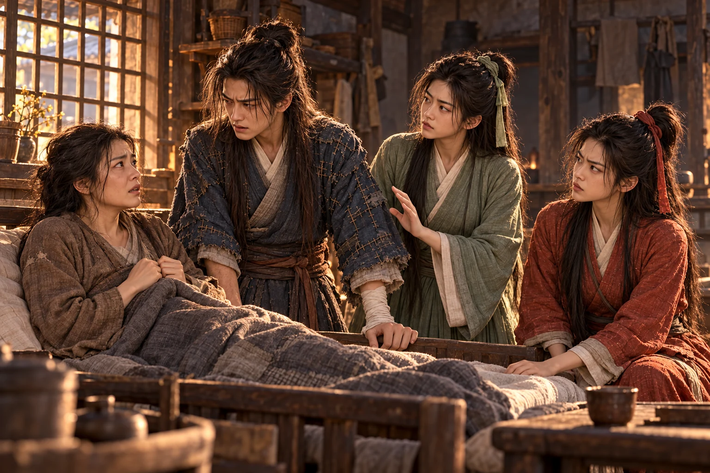

Ketika membuka mata, atap bambu di atasnya tidak dikenalnya. Ia mencoba bangkit. Nyeri mencengkeram dada, memotong panggilan yang sudah sampai di tenggorokan.
“Jangan dipaksa. Engkau baru dapat bernapas tanpa batuk.” meletakkan cawan di dekat pembaringan. Tangannya menyangga bahu Dani dengan hati-hati, lalu menyelipkan lipatan kain agar ia dapat bersandar.
“Sudah berapa lama aku di sini?” tanyanya.
“Sejak kemarin malam. Tadi engkau sempat terbangun, tetapi barangkali tidak mengingatnya.”
Dani memandang pintu. Buntalannya tergantung di sana; ujung benang menyembul dari simpul kain. Tidak ada jubah putih, tidak ada pedang yang biasa diletakkan di sisi tempat tidur. Kehilangan itu datang lebih dahulu daripada ingatan tentang pertarungan.
“Aku memanggil Bibi Long?”
Gadis itu mengangguk. “Aku belum melihatnya. Minumlah dahulu, Kakanda. Mencari seseorang memerlukan tubuh yang sanggup dibawa berjalan.”
Sapaan lembut itu membuatnya menoleh. Di bawah yang kaku, mata penolongnya tampak letih. Dani menerima cawan, tetapi jemarinya gemetar; gadis itu ikut menahannya tanpa mengatakan apa-apa. Cara tersebut mengingatkannya pada : bantuan diberikan sebelum kelemahan sempat terasa memalukan.
“Di kedai engkau sudah menolongku. Sekarang aku merepotkanmu lagi. Namamu saja belum juga kudengar.”
“Kalau ditanyakan ketika engkau hampir pingsan, apakah besok masih diingat?”
“Untuk nama orang yang memberiku obat sepahit ini, ingatanku biasanya sangat baik.”
Senyum kecil terdengar dalam napasnya, meski topeng itu tidak berubah. Sebelum ia menjawab, pintu terbuka dan masuk membawa bungkusan tanaman. Langkah kirinya masih timpang. Melihat Dani terjaga, wajahnya seketika cerah, lalu cepat-cepat mengeras.
“Masih sempat menggoda orang! Kakak menjagamu semalaman, sedangkan kau memanggil orang lain terus.”
“Wushuang,” tegur gadis itu perlahan.
“Aku hanya mengatakan yang kudengar.” Wushuang menaruh tanaman sedikit terlalu keras. Ia takut akan menemukan pembaringan kosong ketika kembali; kini rasa lega itu keluar sebagai kemarahan. “Pergi tanpa kabar, lalu muncul hampir mati. Apakah kau selalu begini kalau tidak ada orang yang mengawasimu?”
hendak membalas, tetapi sapaan tadi menahannya. Ia memandang kedua perempuan itu bergantian. “Kakakmu?”
“Sepupuku. Masih belum kenal?” Wushuang menahan bahu gadis itu dengan satu tangan, lalu menarik topengnya dengan tangan yang lain sebelum sempat dicegah. “Ini Kakak . Dari kemarin kau merepotkannya, sekarang jangan berpura-pura lupa!” Wajah Cheng Ying terbuka; pipinya memerah, dan tangan yang terlambat meraih berhenti di pangkuan.
“Wushuang, engkau ini…” Cheng Ying memandang Dani, malu tetapi tak dapat menahan senyum. “Sudah lama sekali, Kakanda Dani.”

Dani terdiam memandang wajah yang dikenalnya dan sekaligus terasa baru itu. Kelembutan matanya masih sama dengan gadis di halaman keluarga Lu, tetapi empat tahun membuatnya jauh lebih cantik daripada ingatan Dani. Ia baru sadar terlalu lama menatap ketika Wushuang berdeham dengan sengaja.
“Engkau masih menyimpan itu,” kata Cheng Ying, memandang buntalannya. “Waktu itu engkau tidak mau berangkat sebelum benang yang tercecer ditemukan.”
“Engkau juga menunggu di pintu sampai benangnya kutemukan.” Senyum Dani merekah. “Adik Cheng, kalau sejak awal aku tahu siapa yang memberiku obat, tentu tidak kuanggap begitu pahit. Ternyata yang kejam topengnya saja.”
“Kalau begitu besok obatnya tidak perlu diberi madu.” Cheng Ying mengambil dari Wushuang dan melipatnya di pangkuan. “Waktu itu kita masih dikejar orang. Sesudahnya Kakanda pergi mencari gurumu. Aku belum sempat mengatakan siapa diriku.”
Wushuang mengalihkan muka. Ia mengenali kehati-hatian sepupunya: Cheng Ying selalu memberi tempat kepada keinginan orang lain, bahkan ketika keinginannya sendiri harus disembunyikan. “Sekarang sudah tahu. Kalau hendak pergi lagi, setidaknya tunggu sampai tidak perlu kami angkat.”
“Baru bangun sudah diancam tidak boleh pergi. Rupanya kalian memang sepupu.” Dani tertawa kecil, lalu menekan dada. “Baik, aku menurut. Sesudah kuat berjalan, barulah kucari Bibi lagi.”
“Minumlah dahulu,” kata Cheng Ying, menyodorkan cawan yang hampir dilupakannya. “Kalau terus berbicara, sampai malam pun obat ini tidak habis.” Ia ikut tersenyum, tetapi panggilan Bibi tadi menyisakan sepi yang tidak diperlihatkannya.
Menjelang senja, menemukan bekas telapak merah pada batang pohon di jalan tempatnya mencari tanaman obat. Ia kembali tanpa berani menoleh terlalu sering. masih disembunyikannya di balik pakaian; belum berhenti menuntut miliknya.
“Dia tahu kita di sini, Kak,” katanya. “Kalau aku membawa kitab ini pergi, barangkali—”
“Dia akan menangkapmu sebelum lereng berikutnya.” Cheng Ying mengambil cangkul pendek. “Bantu aku menutup jalan masuk.”
Dani menggeser kaki ke tepi pembaringan. Wushuang langsung menahan lututnya. “Kau hendak menolong atau menambah orang yang harus diangkut?”
“Kalau hanya duduk menonton dua nona cantik menjagaku, nanti bagaimana aku berani menyebut diriku lelaki?” mencoba berdiri; dadanya langsung menjawab dengan nyeri.
“Lalu batuk sampai mati sesudah mengayunkannya? Simpan keberanianmu sebentar. Kami pun mempunyai tangan.”
menyusun batu dan menggali alur di depan rumah. Ia memahami dasar pertahanan gurunya, tetapi tidak cukup mahir untuk membuat susunan sekuat milik . Kekurangan itu diakuinya kepada Dani. Mereka perlu tahu batas perlindungan yang dimiliki, bukan keberanian palsu untuk menenangkan malam.
Wushuang menyerahkan kitabnya agar Dani mengingat bagian penawar jika keadaan memburuk. Kakinya menggigil setiap kali angin menggesek dedaunan, tetapi ia tetap berjaga di ambang. Kepada perempuan yang membunuh keluarganya, tubuhnya masih mengenal takut sebelum hatinya sempat memanggil dendam.
Dani membaca dua bagian tentang dan . Ramuan yang diperlukan tidak tersedia seluruhnya. Ia menghafal petunjuk itu, kemudian mengembalikan kitab kepada Wushuang. Mengetahui penawar belum berarti mempunyai penawar.
Menjelang pagi, suara lembut terdengar dari luar. “Wushuang, gurumu mencarimu sampai lelah. Rupanya engkau sudah menemukan orang lain yang bersedia memanjakanmu.”
Li Mochou berdiri di tepi susunan, putih terlipat pada lengannya. Pandangannya melewati pedang Wushuang menuju Dani dan Cheng Ying. Kedekatan mereka menyalakan kepahitan yang dibawanya ke mana-mana; pasangan yang saling menjaga selalu terasa seperti ejekan terhadap nasibnya sendiri.
“Serahkan kitab itu. Sesudahnya kita dapat membicarakan kelancangan kalian dengan tenang.”
Dani tertawa, meski dadanya sakit. “Seperti dua pengemis di kedai itu? Mereka tidak punya kitab pun Bibi bunuh. Baiklah, kalau kami bertiga harus mati, aku masih ditemani dua gadis secantik ini. Bibi menang sendirian, pulang pun sendirian. Dipikir-pikir, nasibku belum tentu lebih buruk.” Wushuang mendesis menyuruhnya diam; Cheng Ying menunduk dengan telinga memerah, tetapi tetap merapat untuk menopangnya.
Ujung kebut Li Mochou bergetar. Ejekan Dani mengenai kesepian yang selama ini dibalasnya dengan kekejaman. “Anak kurang ajar. Nanti kulihat apakah lidahmu masih selincah itu ketika mereka mati lebih dahulu.” Dani mempertahankan senyumnya. Ia ingin kemarahan itu terarah kepadanya, walaupun tubuhnya sendiri belum sanggup menanggung balasannya.
Ia mengitari batu, lalu menyerang dinding samping yang lebih lemah. Papan pecah; Cheng Ying menarik Dani menjauh dari jangkauan kebut. mengayunkan pedang, tetapi pergelangannya terbelit dan terdorong ke pintu. Perlindungan yang disiapkan semalaman belum cukup menghadapi pengalaman .
Tiba-tiba sebatang pengorek tungku menyodok dari luar. Li Mochou menarik kebutnya untuk menangkis. Besi itu tetap maju menuju dadanya, begitu lurus dan berat hingga ia terpaksa meloncat mundur.
Seorang perempuan berambut kusut masuk sambil memeluk pengorek tungku. Tadi ia masih menyenandungkan lagu permainan; kini ia mengerutkan hidung melihat papan yang pecah. “Kakek bilang cari rumah yang ada sulingnya. Rumah ini malah ribut!”
“, awas kebutnya!” seru Cheng Ying.
Shagu mengulang sodokan yang sama. Li Mochou mencoba dua sudut berbeda dan kembali dipaksa mundur. Ia belum memahami bahwa perempuan itu hanya menguasai sedikit gerakan; kesederhanaan yang dilatih bertahun-tahun disangkanya menyembunyikan banyak perubahan.
Ketika berbalik, Li Mochou mendapati telah duduk dekat jendela. Ia tidak mendengar tetua itu datang. Jemarinya mengencang pada gagang ; ingatan tentang kekalahannya di keluarga Lu seketika menghapus keinginannya memperpanjang pertarungan.
“Lima orang menjaga seorang murid durhaka,” katanya. “Pulau Bunga Persik sungguh murah hati.”
“Kalau engkau ingin menghitung muridku, berhentilah melangkah mundur,” jawab Huang Yaoshi.
Li Mochou menjentikkan jarum untuk membuka jalan. Batu kecil melesat dari jari sang tetua, membelokkan logam itu ke tiang. Dalam jeda tersebut Li Mochou sudah menerobos celah dinding. Huang berdiri, tetapi tidak mengejar jauh; dari pembaringan terdengar tersedak menahan darah.
“Dulu engkau hampir merobohkan tubuh demi mencari sebatang jarum,” kata Huang Yaoshi setelah memeriksa nadinya. “Sekarang demi siapa?”
“ sedang dipegang . Aku tidak sempat mencari alasan yang lebih baik, Kakek.”
Tetua itu menatapnya lebih lama. telah menceritakan pertahanan batu dan penolakan di pertemuan. Ia menyuruh Dani menegakkan punggung, lalu menyalurkan tenaga dengan telapak di belakang tubuhnya. Kehangatan perlahan melonggarkan sesak, tetapi Dani tetap harus beristirahat; tenaga pinjaman tidak mengganti hari-hari yang dibutuhkan tubuhnya.
Shagu mengintip dari balik pintu. Ketika Dani menoleh, pengorek di tangannya jatuh. “Hantu! Kakanda jangan ke sini! Bukan Shagu yang membuatmu mati!” Dani hendak bertanya, tetapi perempuan itu sudah menutupi wajah sambil memanggil Huang Yaoshi.
Cheng Ying membawanya keluar. Huang menyuruh Dani memusatkan napas; satu pertanyaan yang terlepas justru membuat dada pemuda itu kembali sesak. Namun Dani tidak melupakan ucapan tersebut. Shagu takut pada wajahnya seolah pernah melihat wajah yang sama pada orang mati. Ayah? Untuk sementara ia menyimpan nama itu, menunggu sampai tubuhnya cukup kuat untuk mencari jawaban.
Selama delapan hari berikutnya, darah berhenti muncul dalam batuk Dani dan ia mulai berjalan ke halaman. Cheng Ying merawatnya; membeli bekal, sedangkan Huang membantu menertibkan aliran tenaganya. Ketika cukup kuat, Dani menirukan senandung Shagu sambil menggerakkan sebutir kacang di antara kedua tangan. Ia membiarkannya menang menebak, lalu mengajak bermain mencari saputangan. Shagu akhirnya tertawa dan memanggilnya kakanda yang baik. Namun ketika Dani menyelipkan pertanyaan tentang lelaki yang mirip dirinya, jawabannya hanya menyebut tempat pemujaan, malam gelap, dan seorang “bibi”; Huang datang sebelum nama itu dapat diperjelas. Dani kembali bercakap ringan, menyembunyikan kegelisahannya di balik permainan.
Suatu petang, Cheng Ying memperbaiki bagian belakang jubahnya. Ia memakai benang dari buntalan Dani setelah meminta izin, menjaga sambungan biru yang lebih rapi agar tidak terlepas. Dani mengawasi berpindah di antara jari-jari itu.
“Jahitan bagian ini milik Bibi Long,” katanya.
“Aku tahu. Engkau selalu merabanya sebelum tidur.”
Dani terdiam. Cheng Ying menunduk pada pekerjaannya. Ia tidak sengaja membuka sesuatu yang diam-diam diperhatikannya setiap malam.
“Kalau terlalu rusak, buatkan saja yang baru,” kata Wushuang dari ambang.
“Yang baru dapat menghangatkan tubuh,” jawab Dani. “Tetapi yang ini pernah dijahit seseorang sambil memarahiku karena tumbuh terlalu cepat.”
Cheng Ying tersenyum, lalu menarik benang lebih perlahan. Ia menyukai suara Dani ketika mengenang, tetapi sedih karena kelembutan itu mempunyai tujuan yang bukan dirinya. Perasaan tersebut tidak membuatnya membenci ; justru ia semakin memahami betapa sulit menempati ruang yang sudah dijaga dengan setia.
“Kalau begitu kita buat ia bertahan sampai kalian berjumpa,” katanya.
“Adik Cheng, kalau terus sebaik ini, bagaimana aku bisa berhenti merepotkanmu?” goda . Cheng Ying hanya merapikan benang di ujung jarum. Senyumnya yang malu membuat Dani senang; ia belum sungguh-sungguh memikirkan harapan yang dapat tumbuh dari gurauan semacam itu.
“Menyukai seorang guru sampai begini, rupanya engkau benar-benar hendak membuat orang tua mati kesal,” ujar yang datang dari halaman.
Dani mengangkat kepala. “Kukira Kakek mendapat julukan Sesat Timur karena tidak suka mengikuti mulut orang. Jangan-jangan soal ini pun aku masih harus mendengar ceramah yang sama?” Nada menantangnya membuat Wushuang berhenti mengunyah.
Huang Yaoshi menatapnya tajam, kemudian tertawa. “Bocah ini! Aku baru membuka mulut, sudah hendak kauajari menjadi sesat. Kalau ingin mudah, belajarlah kepadaku. Setelah bukan muridnya lagi, nikahi saja gurumu yang lama itu.”
“Untuk apa repot-repot?” balas Dani. “Dia tetap guruku. Dia juga akan menjadi istriku. Aku tidak hendak menghapus kebaikannya hanya supaya orang lain senang.”
“Bagus!” Huang menepuk lutut. “Rupanya kau masih lebih keras kepala daripada aku.” Dani segera menyahut, “Kalau begitu kita cocok berkawan. Kakek memikul nama Sesat Tua, biar aku mencoba menjadi Sesat Muda. Tetapi kalau orang datang menantang, jangan semuanya diserahkan kepadaku.”
Huang tertawa sampai ikut tersenyum. Sesudah itu percakapan mereka mengalir lebih bebas; selisih usia tidak menghalangi keduanya saling menyela. Dani tetap mengakui betapa dangkal pengetahuannya di hadapan sang tetua, tetapi tak lagi duduk seperti terdakwa menunggu keputusan. Untuk pertama kali sejak aula, ia dapat menyebut cinta kepada Xiaolongnü tanpa bersiap disuruh malu.
Dua hari kemudian, Huang mengajari Dani dan Cheng Ying dasar serta . Ia memakai ranting untuk menunjukkan sudut yang dapat mengurai lilitan , lalu meminta keduanya mengulang perlahan. Dani cepat mengingat perubahan, tetapi belum mempunyai kekuatan jari ataupun ketepatan sang guru.
“Engkau dapat mengucapkan nama seratus titik tubuh,” kata Huang, membetulkan pergelangannya. “Itu tidak berarti jarimu dapat mencapai satu saja ketika lawan bergerak.”
“Jadi harus bersedia menunggu sampai aku selesai belajar?”
“Kalau lidahmu berhasil membujuknya, engkau boleh menghemat tiga tahun.” Wajah Huang kembali muram. “Dahulu aku punya murid yang dapat menerangkan semua ini kepadamu. Kemarahanku sendiri yang mematahkan jalan mereka.”
Cheng Ying menyentuh lengan gurunya. Ia tidak menyela penyesalan itu dengan pujian. Huang menepuk tangannya, menitipkan obat dan pesan agar mereka tidak mengejar Li Mochou, kemudian berangkat. Ia hendak menyendiri; sikap Li Mochou yang mengejek perguruannya telah membangunkan kenangan yang enggan dibicarakannya di depan banyak orang.
Li Mochou tidak pergi jauh. Selama Huang Yaoshi tinggal, ia menahan diri di balik bukit. Setelah jejak tetua itu menjauh, ia menyerang yang keluar seorang diri. Perempuan itu sempat membalas dengan telapak hingga lengan penyerang kebas, tetapi pulang dalam keadaan sempoyongan.
Bekas tampak di punggungnya. Cheng Ying memberikan obat peninggalan Huang, sementara Dani memakai petunjuk kitab untuk membantu menahan penyebaran racun. Mereka belum mempunyai seluruh bahan penawar; Shagu memerlukan penjagaan, dan mereka kehilangan orang yang paling kuat untuk menahan Li Mochou.
“Potong sapunya,” gumam Shagu ketika melihat Cheng Ying merapikan benang. “Supaya tidak memukul lagi.”
memandang gunting, kemudian Wushuang. “Adakah pandai besi di dekat tempatmu membeli bekal?”
“Ada. Kau sungguh hendak melawan dengan gunting?”
“Sapunya terbuat dari bulu, bukan urat naga. Mengapa tidak boleh digunting?” Dani menatap kedua gadis itu. “Kalau berhasil, kalian jangan mengaku semuanya gagasan Shagu. Sisakan sedikit kepandaian untukku.”
Mereka membawa Shagu dengan keledai ke bengkel di kaki bukit. Dani berjalan di sampingnya memakai tongkat bambu yang dipotong Wushuang; langkahnya sudah tegak, tetapi napas panjang masih menyisakan nyeri. Di bawah atap jelaga, seorang pandai besi bertumpu pada untuk kaki kirinya dan mengamati gambar gunting besar yang dibuat Dani di tanah.
“Besi dapat kubentuk,” kata lelaki itu. “Tetapi benda sebesar ini akan menarik tanganmu sebelum sempat menutup.”
“Kalau begitu buatlah cukup ringan untuk diayun, cukup kuat untuk menjepit.”
Pandai besi mengangkat palu. memperhatikan lengkung pergelangannya sebelum pukulan turun. Gerakan itu dikenalnya dari pelajaran gurunya. Ia baru hendak bertanya ketika suara Li Mochou terdengar di halaman.
“Tidak perlu bersusah payah. Kain kafan lebih mudah dipesan daripada senjata yang belum pernah kalian pakai.”
Wushuang berdiri di pintu ruang tempat Shagu dibaringkan. Pandai besi menghentikan palunya ketika mengejek murid Pulau Bunga Persik yang hanya pandai bersembunyi di belakang gurunya.
“Bagaimana keadaan Guru Huang?” tanyanya kepada Cheng Ying.
Gadis itu menangkupkan tangan. “Tuan pernah belajar kepada beliau?”
“Aku . Sudah lama tidak pantas menyebut diriku muridnya.” Ia memandang kaki kirinya. “Barangkali namaku pun sudah tidak diingat.”
Cheng Ying mendekat. “Guru menyesali hukuman yang menimpa murid-muridnya. Terutama adik murid yang paling patuh. Jika Tuan adalah Feng Mofeng, beliau masih mengingat Tuan.”
Palu itu turun perlahan ke landasan. Bertahun-tahun Feng menyimpan kerinduan kepada orang yang mematahkan kakinya dan mengusirnya; mendengar bahwa dirinya masih diingat membuat wajah kerasnya kehilangan pertahanan.
“Kakak seperguruan,” kata Cheng Ying, lebih lembut. “Aku Cheng Ying.”
Li Mochou mengetukkan gagang ke telapak. “Jika perkenalan sudah selesai, minggirlah, Pandai Besi. Gurumu membuangmu, tetapi rupanya engkau masih ingin mati untuk namanya.”
Feng memasukkan kepala palu dan ujung penyangga besinya ke bara. Tangannya gemetar ketika menariknya kembali. Ia belum terbiasa melukai manusia, namun tidak akan menyerahkan adik seperguruannya kepada perempuan itu.
“Engkau boleh pergi dari bengkelnya orang miskin ini,” katanya. “Mereka tinggal.”

Li Mochou menyerang sebelum ia selesai mengangkat palu. Tiga kali Feng menghindar tanpa membalas; kebut menyambar pipinya dan merobek lengan bajunya. meraih bambu, tetapi dadanya tertarik ketika memutar tubuh. Cheng Ying menahannya agar tidak menerjang sembarangan.
“Senior Feng!” seru Dani. “Kalau engkau terus mengalah, dia akan membawa Adik Cheng pergi sambil menertawakan gurumu!”
Ketakutan Feng berubah arah. Yang lebih ditakutinya kini ialah membiarkan orang di belakangnya mati karena ia ragu. menyapu bersamaan. Li Mochou melilit kepala palu dengan ; desis tajam terdengar, lalu bulu putih terbakar dan putus.
Senjatanya rusak. Ia mengubah serangan menjadi telapak, tetapi besi panas memaksanya menjaga jarak. Feng maju dengan tunggal, mempertaruhkan seluruh keseimbangannya pada setiap pukulan. Keberaniannya memberi tekanan yang tidak sebanding dengan pengalaman bertarungnya.
mundur. Ia dapat menunggu tenaga Feng habis, tetapi kedua gadis mulai menutup sisi halaman dan Dani mengawasi perubahan langkahnya. Membayar kemenangan dengan luka berat bukan harga yang ingin diberikannya hari itu.
“Ilmu gurumu hanya menang karena bara,” katanya dingin.
Dani menggambar dua garis dengan bambu: jalur kebut dan perubahan yang dipelajarinya. “Kalau Bibi punya kebut cadangan, bawalah besok. Hari ini terlalu sedikit yang bisa dipotong.” Ia menguraikan sudut serangan itu dengan sengaja, seolah tubuhnya sudah sanggup melakukannya. Li Mochou menatap garis-garis tersebut. Bualan Dani menyembunyikan keterbatasan tenaganya, tetapi pelajaran Huang di balik bualan itu benar; kebut yang terbakar di tangannya menjadi alasan tambahan untuk tidak mencoba.
“Pergilah sebelum Guru Huang mendengar engkau masih ingin membuktikannya,” kata .
Li Mochou menatap mereka satu per satu, kemudian meninggalkan halaman. Ancaman itu belum berakhir untuk selamanya. Namun kali ini mereka tidak perlu menyerahkan seorang pun sebagai harga keselamatan.
Feng menurunkan palu. bergegas menyiapkan kain untuk pipinya, sementara Cheng Ying menopang lengannya. Dani memberi hormat, lebih dalam daripada ketika meminta gunting tadi.
Sore itu terbangun di ruang belakang bengkel. Ketika Dani membawa air, ia menarik selimut sampai ke dagu. Permainan beberapa hari lalu seperti terlupakan begitu nyeri racun membuatnya gelisah. “Hantu! Hantu datang lagi!”
“Kakanda Kang sudah mati. Jangan bawa Shagu pergi!”
Cawan berhenti di tangan Dani. Nama yang dicarinya akhirnya keluar. Ia hampir menerjang dengan pertanyaan, lalu melihat Shagu menutup kedua telinga. Dani memaksa dirinya tersenyum dan menyenandungkan lagu permainan yang kemarin membuat perempuan itu tertawa.
“Kalau hantu, mana mungkin aku masih ingat lagu kita?” Ia memindahkan cawan ke belakang punggung. “Coba tebak, airnya kusembunyikan di sebelah mana? Kalau benar, kubawakan lagi. Kalau salah, satu pertanyaanku harus dijawab.”
Shagu mengintip di sela jarinya. “Di belakang! Kakanda curang. Kedua tangannya di belakang!” Ia tertawa sedikit ketika pura-pura gagal menyembunyikan cawan. Ketakutannya belum hilang, tetapi permainan yang dikenal membuatnya menurunkan selimut.
Dani meletakkan air dalam jangkauannya, lalu merendahkan suara. “Baik, kau menang. Kakanda tidak akan membawamu pergi. Tetapi aku lupa… aku mati karena apa?” Ia sengaja memakai kekeliruan itu. Menjadi hantu ayahnya terasa keji, namun keinginan mengetahui kebenaran lebih kuat daripada rasa malunya.
“Di tempat pemujaan,” bisik Shagu. “Malam-malam. Ramai sekali. Bibi menyuruh Shagu bercerita, Kakanda melarang.” Ucapannya putus-putus; setiap kali wajahnya mengerut ketakutan, Dani mengetukkan jari mengikuti irama lagu tadi. “Lalu? Kakanda tidak marah kepadamu. Sesudah itu apa?”
“Lalu Kakanda Kang memukul Bibi. Tangannya kena duri. Dia tertawa, tetapi bukan tertawa senang. Shagu takut.”
Dani berhenti mengetuk. “Tanganku terkena duri? Duri apa? Bibi yang mana?”
“Baju Bibi berduri. Ada racunnya. Kakanda memukul, lalu jatuh.” Shagu menutupi telinga. “Aku tidak mau mendengar tawa itu lagi. Kakanda jangan tertawa begitu!”
Dani mencengkeram tepi dipan. Kehangatan ayahnya datang begitu jelas: rambut yang ditarik terlalu keras ketika diikat, tawa bersalah, dan tangan ibunya yang mengambil alih. Ia pernah hidup bersama lelaki itu. Ayahnya bukan sekadar nama buruk yang dibisikkan orang dewasa ketika mengira seorang anak tidak mendengar.
Ayah sempat pulang kepada kami. Mengapa tidak ada yang pernah mengatakan siapa yang merenggutnya lagi?
“Perempuan itu siapa?” Suara Dani meninggi sebelum sempat ditahannya. Melihat Shagu mundur, ia memaksa dirinya duduk kembali. “Kakek yang bersamamu itu… siapa baginya?”
“Anak Kakek. Dia memanggil Kakek ‘Ayah’.”
masuk ketika Dani bangkit begitu cepat hingga cawan hampir tersenggol. “?” Nyeri menarik dadanya; ia tidak memperdulikannya. “Katakan. Apakah dia bersama ?”
tidak menjawab nama itu. Ia justru menirukan panggilan yang diingatnya, lembut dan akrab: “Kakanda Jing, Kakanda Jing. Begitu Bibi memanggil suaminya.”
Dani menatap dinding. Semua bunyi seakan menjauh. Perempuan yang belum lama ini dua kali ditolongnya adalah perempuan dalam cerita itu; lelaki yang ingin diakuinya sebagai ayah kedua adalah suaminya.
“Selama ini mereka tahu.” Dani tertawa sekali, pendek dan buruk. “Paman Guo memelukku seperti anak sendiri. Bibi Guo menyuruhku belajar menjadi orang baik. Mereka tahu!”
Shagu menjerit ketika berbalik dan meraih pergelangannya untuk menahan jawaban yang belum keluar. Cheng Ying segera menyela. “Kakanda, lepaskan. Dia sedang sakit!” menepis tangan Dani, lalu mendekap bahu Shagu. Baru ketika mendengar tangis perempuan itu, Dani tersadar bahwa permainan yang dimulainya sudah berubah menjadi ancaman.

Kesaksian itu memberi Dani hubungan antara racun, perlindungan Huang Rong, dan kematian ayahnya. Ia belum mengetahui sebab pertikaian, asal racun, atau bagian yang tidak dipahami Shagu. Namun kemarahannya telah menyusun jawaban lebih cepat daripada pertanyaannya: keluarga Guo membunuh ayahnya, lalu membesarkannya untuk menutup kesalahan.
Aku hampir mati untuk menyelamatkan mereka. Apakah ketika melihat wajahku, mereka pernah mengingat wajah Ayah?
“Kakanda!” Cheng Ying berdiri di jalannya. “Shagu sudah mengatakan yang diingatnya. Jangan menyakitinya hanya karena engkau belum sanggup mendengar akhir ceritanya.”
“Ayah mati terkena baju beracun Huang Rong! Aku hampir mati menyelamatkannya, padahal—” Dani menggigit bibir sebelum kalimat itu selesai. Darah terasa di lidahnya.
“Siapa yang membuatnya beracun. Mengapa ayahmu menyerang. Apa yang dilakukan Paman Guo malam itu. Kita belum mendengar semua itu.”
Dani memalingkan wajah. Ia ingin menolak, tetapi pertanyaan Cheng Ying tetap dapat dimengertinya; itulah yang membuatnya semakin marah. Kini bahkan dendam pun menuntutnya menunggu.
Wushuang menahan lengannya. “Aku juga ingin mati. Setiap kali teringat ayah dan ibuku, aku ingin membunuhnya dengan tanganku sendiri. Tetapi aku melihatnya malam itu. Kau belum tahu siapa yang melakukan apa. Jangan pergi membunuh orang lalu baru mencari tahu sesudahnya!”
Dani menatapnya. Teguran itu datang dari seseorang yang selama bertahun-tahun harus menyapa pembunuh orang tuanya sebagai guru. Ia tidak dapat mengusirnya dengan mengatakan bahwa Wushuang tidak mengerti.
“Aku tidak akan berjanji melupakan ini,” katanya akhirnya.
“Tidak seorang pun memintamu begitu.” mengulurkan tangan. “Berjanjilah memastikan kesalahan mereka sebelum menjatuhkan hukuman. Aku ingin engkau kembali dengan jawaban, bukan membawa penyesalan yang tidak dapat ditarik lagi.”
Dani menatap telapak yang diulurkan Cheng Ying. Ia ingin menyingkirkannya dan segera berangkat. Namun gadis itu tidak menurunkan tangan. Akhirnya Dani menyambutnya dengan bunyi tepuk yang terlalu keras. “Baik. Aku akan memastikan dahulu. Tetapi kalau mereka memang membunuh Ayah, jangan minta aku mengampuni.” Janji itu menahan langkahnya; belum menenangkan amarahnya.
Ia bertahan dua malam lagi untuk membantu merawat dan memastikan Li Mochou tidak kembali. Dalam waktu itu Dani dapat mengerahkan tenaga perlahan tanpa batuk, meski tubuhnya belum siap menerima benturan keras. Ketika ia merapikan buntalan, Cheng Ying mengembalikan jubah biru yang sudah selesai ditambal.
“Engkau masih hendak mencari Bibi Long?” tanyanya.
“Tentu.” mengusap jahitan di bahunya. “Kalau Bibi melihat baju ini, dia akan tahu ada orang yang menjagaku dengan baik. Adik Cheng, nanti harus kukatakan juga bahwa obatmu sengaja dibuat pahit supaya aku tidak betah?”
“Kalau terlalu manis, Kakanda akan menganggapnya minuman dan meminta semangkuk lagi.” Cheng Ying tersenyum, lalu menunduk membetulkan simpul buntalan. Ia ingin Dani tinggal lebih lama, tetapi tidak sanggup memakai luka pemuda itu untuk menahan langkahnya.
Dani tertawa, kemudian melihat mata Cheng Ying yang sedikit merah. Ia teringat betapa sering gadis itu mengalah sebelum sempat diminta. Gurauan berikutnya urung keluar. “Terima kasih, Adik Cheng,” katanya lebih pelan. “Aku akan mengingatnya.”
“Ingat juga janjimu tadi.” Cheng Ying menyerahkan buntalan itu. “Kalau sudah menemukan jawaban, kabari kami. Jangan membuat marah-marah setiap kali mendengar langkah di luar.”
Wushuang mengantarnya sampai ujung halaman. “Kalau bertemu Li Mochou, jangan mengira kau sudah menjadi hanya karena membawa tongkat.”
“Aku tentu lari. Kalau sampai mati, siapa yang akan kauomeli sewaktu pulang?” Dani membungkuk sedikit untuk menangkap wajahnya yang dipalingkan. “Jaga dirimu juga, Wushuang.”
“Gunakan juga ingatan itu untuk pulang.” Wushuang menatap jalan agar Dani tidak melihat matanya. “Ke sini ataupun kepada bibimu. Pokoknya pulang dalam keadaan hidup.”
Di jalan besar, Dani melihat bekas roda dan jejak kuda rombongan Mongol. Beberapa rumah menutup pintu ketika prajurit pemungut bekal lewat. Seorang pemilik gerobak menahan kusir agar tidak membantah kantong gandumnya diambil. Ketakutan yang sunyi itu membuat Dani berhenti; amarah kepada keluarga Guo tidak mengubah apa yang dilihatnya di wajah orang-orang biasa.
Ia mengambil jalan bukit untuk menghindari rombongan, lalu mengenali yang membawa buah dan seikat kayu. Murid itu juga mengenalinya. Buah berjatuhan ketika Daerba menghalangi jalan dengan kedua lengan, mengucapkan sesuatu dengan suara memohon.
Dani hanya menangkap sapaan yang pernah didengarnya di aula. Daerba masih menganggapnya kakak seperguruan yang kembali hidup. Namun kecemasan dalam wajah besar itu tidak memerlukan terjemahan. Di bawah gubuk terbuka lebih tinggi di lereng, Jinlun duduk bersila, napasnya tersangkut dan wajahnya pucat.
Dani dapat pergi. Ia juga dapat membalas hantaman yang hampir membunuhnya ketika lawan belum sanggup mengangkat roda. Daerba berlutut, lalu menoleh kepada gurunya dengan ketakutan yang telanjang.
Pemuda itu teringat suara yang memanggilnya anak.
“Berdirilah,” katanya sambil menuntun Daerba bangkit. Ia menunjuk dadanya sendiri, kemudian Jinlun. “Aku tidak datang untuk membunuh orang yang sedang memulihkan luka.”
Jinlun membuka mata. “Sesudah yang kulakukan kepadamu, engkau memilih waktu yang ganjil untuk bermurah hati.”
“Ucapan terima kasihmu aneh sekali, Biksu.” berlutut di belakangnya. “Hemat napas dahulu. Sesudah tidak megap-megap, barulah kita bertengkar lagi.”
Dengan persetujuan Jinlun, Dani menempatkan telapak di punggungnya dan menyalurkan sedikit tenaga untuk menopang aliran yang tersendat. Ia tidak memahami seluruh cara latihan lawannya dan tidak memaksakan lebih daripada yang dapat ditanggung tubuh sendiri. Setelah satu putaran napas panjang, ia berhenti, berkeringat dingin. Jinlun tetap terluka, tetapi tidak lagi terancam oleh gangguan konsentrasi yang membuat Daerba panik.
“Mengapa engkau berjalan sendirian?” tanya Jinlun setelah cukup kuat berbicara.
Dani menceritakan bahwa pergi, lalu menyebut kesaksian tentang ayahnya. Ia tidak mengatakan telah memperoleh seluruh kebenaran. Namun tiap kali nama keluar, rahangnya mengeras, dan Jinlun tidak melewatkan tanda itu.
“Engkau hendak meminta penjelasan kepada orang yang dapat membunuhmu dengan satu pukulan. Bagaimana jika jawabannya tidak memuaskan?”
“Kalau mereka bersalah, hutang nyawa harus dibayar.” Dani menatap tangannya sendiri. Janji kepada teringat sebelum ia melanjutkan, “Aku akan membuat mereka menjelaskan semuanya. Jangan mengira aku datang untuk mengemis belas kasihan.”
“Bagus. Maka hiduplah cukup lama untuk mempunyai pilihan.” Jinlun memandang tangan yang baru menolongnya. “Ilmumu datang dari banyak perguruan. Tetapi ketika menghadapi Guo Jing, yang mana dapat kauandalkan sampai tuntas?”
Dani tidak segera menjawab. Ia mengingat telapak, pedang, tongkat, serta perubahan yang hanya pernah dicobanya sekali. Banyak jalan telah terbuka; ia terus berlari memasuki jalan berikutnya sebelum benar-benar mengenal yang sedang diinjak.
“Menyatukan pelajaran tidak berarti mencampurkan semuanya dalam satu serangan,” lanjut . “Perdalam yang menjadi milikmu. Kalau tidak, musuh hanya perlu bertahan sampai engkau kehabisan kejutan.”
Nasihat itu menyentuh kekurangan yang baru dibuktikan tubuhnya sendiri. Dani menunduk, menerimanya tanpa melupakan dari tangan siapa luka dadanya berasal.
“Ikutlah rombonganku,” kata Jinlun. “Ada orang-orang berilmu yang dapat kautemui. Aku pun mempunyai urusan dengan Guo Jing.”
“Aku orang Han. Jangan mengira dendamku kepada keluarga Guo membuatku rela membantu Mongol menindas rakyat Song.” Dani teringat gerobak di jalan. “Jika rombonganmu hendak merampas gandum petani, carilah pembantu lain. Mereka tidak berutang nyawa kepadaku.”
“Yang kubicarakan orang persilatan.”
Jawaban itu menyisakan ruang yang sengaja tidak diperjelas Jinlun. Ia membutuhkan bakat Dani dan mengetahui dendam dapat mengantar pemuda itu lebih jauh daripada bujukan menjadi murid. Dani pun menyadari dirinya sedang ditarik, tetapi tawaran memperkuat diri terasa terlalu berguna untuk segera ditolak.
“Aku ikut melihat orang-orang hebat yang kaubanggakan itu.” Senyum miring muncul lagi di bibir . “Tetapi jangan dahulu menghitungku sebagai murid atau anak buahmu. Untuk satu kali pertolongan, harga yang kauminta terlalu mahal.”
kembali memunguti buah. Jinlun mengangguk, puas memperoleh langkah pertama. Dani duduk di ambang gubuk, memegang buntalan yang menyimpan . Kali ini ia memilih menunggu di dekat orang yang pernah hampir membunuhnya.
Bibi, aku masih mencarimu. Tetapi jika engkau datang sekarang, apakah engkau akan mengenali jalan yang sedang kupilih?